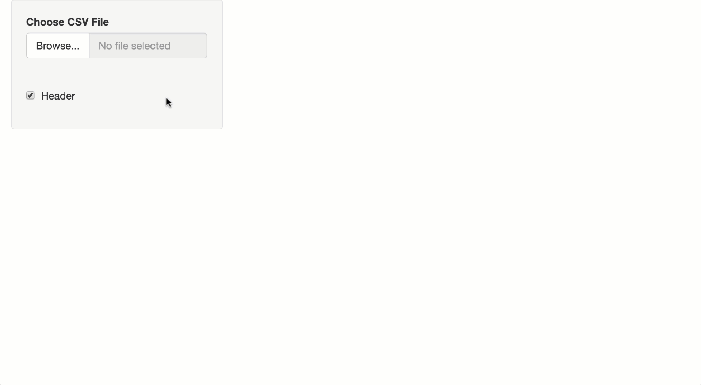
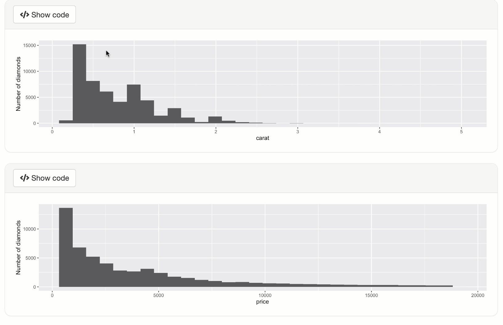
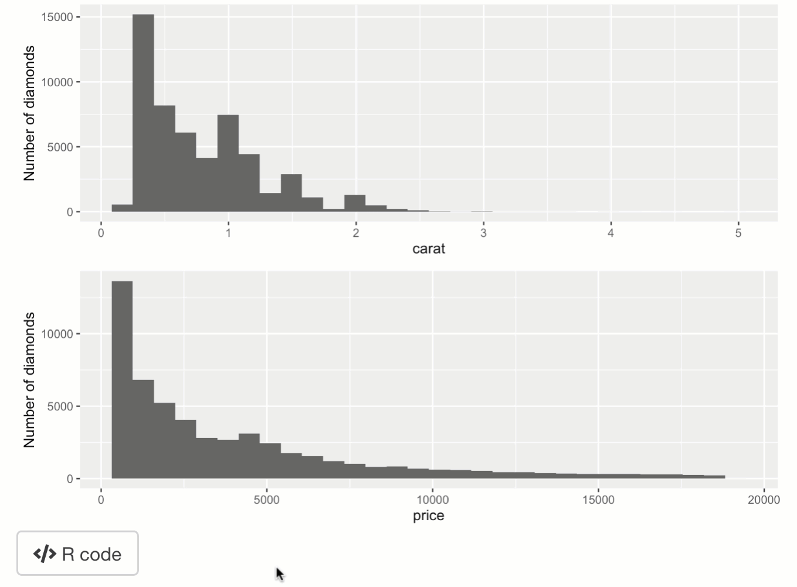

Code distribution
Carson Sievert & Joe Cheng
2019-07-03
02-code-distribution.RmdOnce you’re able to generate code that replicates desired logic in your Shiny app, you’ll need some way to distribute the code (and the results!) to users. shinymeta provides a few utilties to make all these things a bit easier to implement, including downloading code and results as well as showing code in the Shiny app itself.
Downloading code and results
shinymeta provides helpers for generating rmarkdown reports from both R scripts (buildScriptBundle()) and Rmd templates (buildRmdBundle()). Both of these functions use code that you provide to produce a source file, then they (optionally) run rmarkdown::render() on that source file, compress the code & results into a zip file, and provide shiny::Progress indications to the user throughout all these steps. These functions are best used inside a downloadHandler() that’s linked to either a downloadButton() or downloadLink(), so the user can generate and download these reports on demand.
From an R script
The buildScriptBundle() produces an R script from a code expression. The default behavior is to call rmarkdown::render() on the resulting script, so to customize the resulting output file, you can leverage all it’s support for compiling R scripts, such as including markdown and knitr chunks in special comments. You can also provide arguments to the render() call through the render_args argument.
library(shiny)
library(shinymeta)
library(ggplot2)
ui <- fluidPage(
downloadButton("download_script", "Download script"),
plotOutput("p1"),
plotOutput("p2")
)
server <- function(input, output) {
output$p1 <- metaRender(renderPlot, {
qplot(data = diamonds, x = carat) + ylab("Number of diamonds")
})
output$p2 <- metaRender(renderPlot, {
qplot(data = diamonds, x = price) + ylab("Number of diamonds")
})
output$download_script <- downloadHandler(
filename = "ggcode.zip",
content = function(file) {
ggcode <- expandCode({
"#' ---"
"#' title: 'Some ggplot2 code'"
"#' author: ''"
"#' ---"
"#' Some text that appears above the plot"
"#+ plot, message=FALSE, tidy=TRUE"
library(ggplot2)
gridExtra::grid.arrange(
!!output$p1(),
!!output$p2()
)
})
buildScriptBundle(
ggcode, file,
render_args = list(output_format = "pdf_document")
)
}
)
}
shinyApp(ui, server)
From an Rmd template
If you need code spread across multiple chunks in a report, you’ll have to use buildRmdBundle() instead of buildScriptBundle(), which requires Rmd template file. That template should contain one or more ‘variables’ surrounded in {{}} that match names supplied to buildRmdBundle()’s vars argument.1 For example, this template named report.Rmd has two variables, {{plot1}} and {{plot2}}, which we’ll eventually supply with the code from output$p1 and output$p2.
---
title: "Some ggplot2 code"
author: ""
output:
pdf_document: default
html_document:
code_folding: "hide"
---
```{r setup, include=FALSE}
knitr::opts_chunk$set(
out.width="100%",
tidy = TRUE
)
```
Here is the first output:
```{r}
{{plot1}}
```
And the second one:
```{r}
{{plot2}}
```
Then, to use this report.Rmd template, we could replace buildScriptBundle() with this instead:
buildRmdBundle(
"report.Rmd",
file,
vars = list(
plot1 = expandObjects(output$p1),
plot2 = expandObjects(output$p2)
),
render_args = list(
output_format = "all"
)
)Including other files
If your report needs access to other files (e.g., data files or images), you’ll want to use the include_files argument. This copies local file(s) over to the (temporary) directory where the report generation occurs and includes them in the final zip bundle. More than likely, you’ll want to use this to include a dataset that your Shiny app has access to, but your users probably don’t. Below is a Shiny app where a user can upload their own dataset, then download that dataset along with some transformation of that dataset.
library(shiny)
library(shinymeta)
ui <- fluidPage(
sidebarLayout(
sidebarPanel(
fileInput("file1", "Choose CSV File", accept = "text/csv"),
checkboxInput("header", "Header", value = TRUE),
uiOutput("download_button")
),
mainPanel(verbatimTextOutput("summary"))
)
)
server <- function(input, output) {
data <- metaReactive2({
req(input$file1)
path <- input$file1$datapath
filename <- basename(path)
# Export code that uses relative paths! 🔥
withr::with_dir(dirname(path), {
metaExpr({
read.csv(!!filename, header = !!input$header)
})
})
})
output$download_button <- renderUI({
req(input$file1)
downloadButton("download")
})
output$summary <- metaRender(renderPrint, {
skimr::skim(!!data())
})
output$download <- downloadHandler(
filename = "report.zip",
content = function(out) {
filename <- input$file1$datapath
buildScriptBundle(
expandObjects(data, output$summary), out,
include_files = setNames(basename(filename), filename)
)
}
)
}
shinyApp(ui, server)
Showing code
For an output
If your Shiny app has lots of outputs, then you may want an intuitive way for users to obtain the code for specific output(s). For this purpose, shinymeta provides outputCodeButton(), which wraps an output in a container with a button. The button works in a similar way to an shiny::actionButton(), except the input is determined by the outputId of the shiny output it’s overlaying: input$OUTPUTID_output_code. When this button is clicked, we recommend showing code for an output by supplying that code to displayCodeModal() (which shows a shiny::modalDialog() that contains a shinyAce::aceEditor()).
library(shiny)
library(shinymeta)
library(ggplot2)
ui <- fluidPage(
outputCodeButton(plotOutput("p1", height = 200)),
outputCodeButton(plotOutput("p2", height = 200))
)
server <- function(input, output) {
output$p1 <- metaRender(renderPlot, {
qplot(data = diamonds, x = carat) + ylab("Number of diamonds")
})
output$p2 <- metaRender(renderPlot, {
qplot(data = diamonds, x = price) + ylab("Number of diamonds")
})
observeEvent(input$p1_output_code, {
code <- expandObjects(output$p1, .pkgs = "ggplot2")
displayCodeModal(code)
})
observeEvent(input$p2_output_code, {
code <- expandObjects(output$p2, .pkgs = "ggplot2")
displayCodeModal(code)
})
}
shinyApp(ui, server)
For numerous outputs
If you want to show code for a collection of outputs at once, we recommend using a shiny::actionButton() instead of outputCodeButton() to trigger the code display. Note that with displayCodeModal(), you are able to control both the modalDialog() as well as the shinyAce::aceEditor() that it contains.
library(shiny)
library(shinymeta)
library(ggplot2)
ui <- fluidPage(
plotOutput("p1"),
plotOutput("p2"),
actionButton("code", "R code", icon("code"))
)
server <- function(input, output) {
output$p1 <- metaRender(renderPlot, {
qplot(data = diamonds, x = carat) + ylab("Number of diamonds")
})
output$p2 <- metaRender(renderPlot, {
qplot(data = diamonds, x = price) + ylab("Number of diamonds")
})
observeEvent(input$code, {
code <- expandCode({
library(ggplot2)
gridExtra::grid.arrange(
!!output$p1(),
!!output$p2()
)
})
displayCodeModal(
code,
title = "ggplot2 code",
size = "s",
fontSize = 16,
height = "200px",
theme = "solarized_dark"
)
})
}
shinyApp(ui, server)
Instead of using parameterized reports (i.e., the usual way to generate downloadable reports),
buildRmdBundle()usesknitr::knit_expand()to fill in the Rmd template, so the user gets not only the report, but also the source file with the essential logic to reproduce that report.↩︎